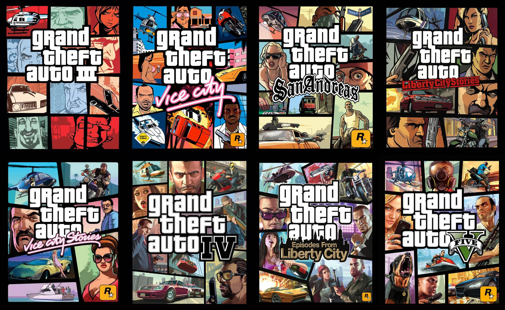
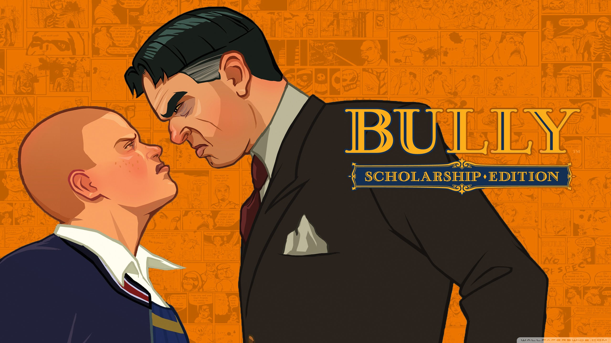
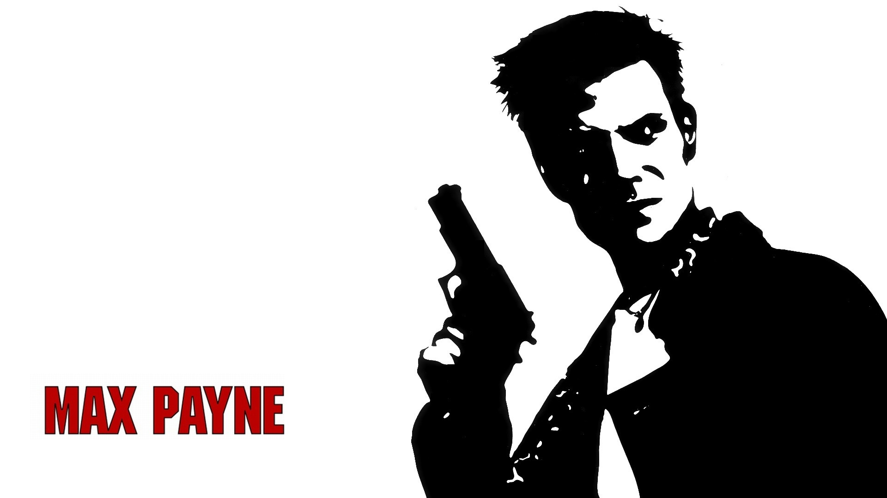
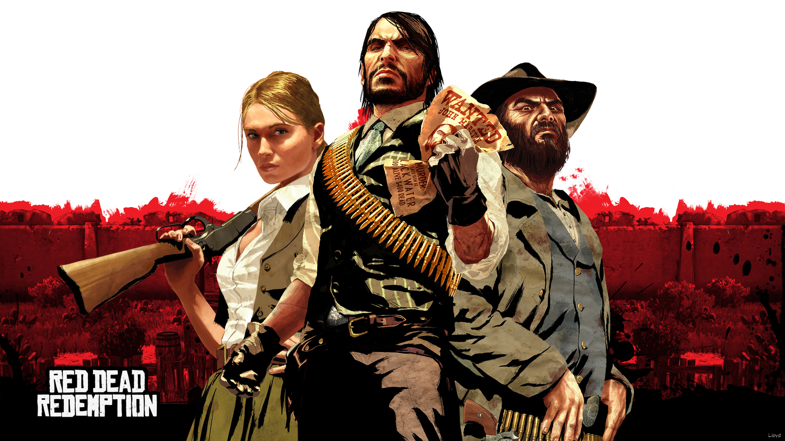
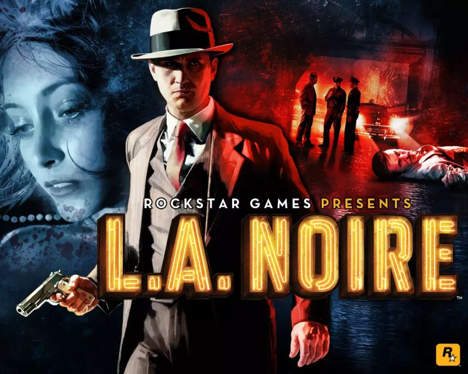
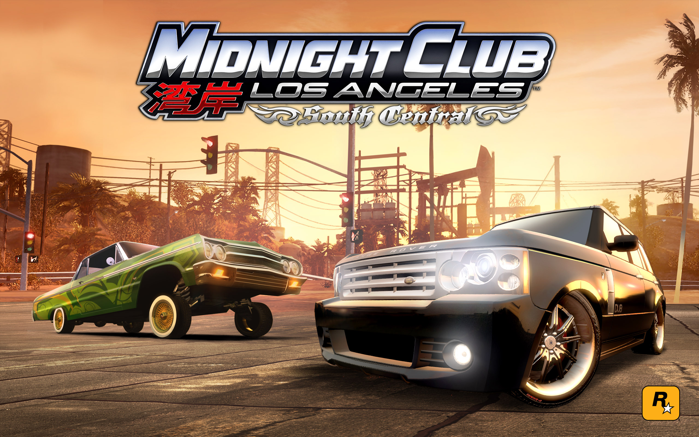
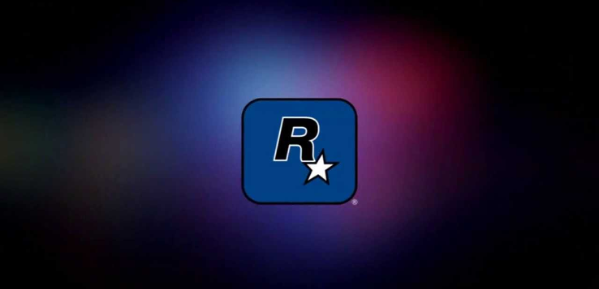

<html>
</html>
<html>
<head>
<meta charset="utf8">
<title>Адаптация</title>
<style>
   p.dline{
    line-height: 1,9;
   }
  </style>
<link rel="stylesheet" type="text/css" href="1.2style.css" />
</head>
<body text="#336699">
	<div id="main">
		<div id="header">
			
		</div>
		<div id="menu">
			<nav tabindex="0"><div tabindex="0"><a href="#"><font size="+1" face="Arial"><b>Главная</b></a><a href="#"><font size="+1" face="Arial"><b>Галерея</b></a><a href="#"><font size="+1" face="Arial"><b>Контакты</b></a><a href="#"><font size="+1" face="Arial"><b>Прайс-лист</b></a></div></nav>
		</div>
		<div id="content">
			<div class="container">
				<div class="b f1">
					<div class="image" align="center"></div>
					<div class="text">
						<h2>Grand Theft Auto</h2>
						<p>Grand Theft Auto - серия мультиплатформенных компьютерных игр, созданных и разрабатываемых главным образом шотландской компанией-разработчиком Rockstar North...</p>
						<a href="#" class="button">Подробнее...</a>
					</div>
				</div>
				<div class="b f2">
					<div class="image" align="center"></div>
					<div class="text">
						<h2>Bully</h2>
						<p>Bully - компьютерная игра в жанре приключенческого боевика с видом от третьего лица и открытым миром, разработанная Rockstar Vancouver и выпущенная Rockstar Games в октябре 2006 года для игровой приставки PlayStation 2...</p>
						<a href="#"class="button">Подробнее...</a>
					</div>
				</div>
				<div class="b f3">
					<div class="image" align="center"></div>
					<div class="text">
						<h2>Max Payne</h2>
						<p>Max Payne - это совокупность художественных произведений (несколько компьютерных игр, кинофильм и комиксы) по вымышленной вселенной Max Payne. Действие произведений разворачивается в Нью-Джерси и Бразилии...</p>
						<a href="#" class="button">Подробнее...</a>
					</div>
				</div>
				<div class="b f4">
					<div class="image" align="center"></div>
					<div class="text">
						<h2>Red Dead Redemption</h2>
						<p>Red Dead Redemption -  серия консольных игр в жанре приключенческого вестерн шутера от третьего лица, разрабатываемых американской компанией Rockstar San Diego и издаваемых Rockstar Games...</p>
						<a href="#"class="button">Подробнее...</a>
					</div>
				</div>
				<div class="b f5">
					<div class="image g5" align="center"></div>
					<div class="text">
						<h2>L.A. Noire</h2>
						<p>L.A. Noire - мультиплатформенная игра в жанре action-adventure/симулятор детектива, разработанная австралийской студией Team Bondi и выпущенная издательством Rockstar Games 17 мая 2011 года на PlayStation 3 и Xbox 360...</p>
						<a href="#" class="button">Подробнее...</a>
					</div>
				</div>
				<div class="b f6">
					<div class="image g6" align="center"></div>
					<div class="text">
						<h2>Midnight Club</h2>
						<p>Midnight Club -  видеоигра в жанре аркадного автосимулятора, разработанная студией Rockstar San Diego и изданная компанией Rockstar Games для игровых приставок PlayStation 2 и Xbox и для персональных компьютеров под управлением Windows в 2003 году...</p>
						<a href="#"class="button">Подробнее...</a>
					</div>
				</div>
			</div>
		</div>
		<div class="content2">
			<div class="text1">
				<p align="center"><font face="Times New Roman, Arial" size="+3">О компании</p>
				<p><font face="Times New Roman, Arial" size="+1">Rockstar Games — американская компания, Компания является собственностью Take-Two Interactive, но при этом владеет девятью филиалами, разбросанными в разных точках нашей прекрасной планеты. В этой статье мы решили соединить все сведения в единое целое, сами до конца не представляя, что из этого получится. Страхи были напрасными, ведь вышло все очень даже «вкусно».</p>
				<div class="img1" align="center"></div>
				<p>Теперь давайте мысленно перенесемся на 13 лет назад. Именно тогда, в 1998 году, была основана Rockstar Games. Среди проектов, изданных компанией, значатся: Grand Theft Auto, Max Payne, Red Dead Redemption, Bully и другие «неприметные» тайтлы, куда попал и недавний L.A. Noire. Теперь немного географии. Располагается Rockstar Games в самом сердце США - Нью-Йорке.</p>
				<p>Одним из старейших филиалов Rockstar Games является небезызвестная Rockstar North - создатели всеми любимой серии GTA. Среди прочих действующих студий, эта дочерняя кампания по праву является главной. Годом основания Rockstar North стал далекий 1988-ой. Ни о какой Rockstar речь тогда и не шла.</p>
				<p>Основатели студии в лице Дэвида Джонса, Рассела Кэя, Майка Дэйлли и Стива Хэммонда решили остановиться на загадочном названии DMA. Эти три заглавные буквы ровным счетом ничего не значили. Просто они попались на глаза в документации к персональному компьютеру Amiga кому-то из ребят, после чего на небосклоне игровой индустрии зажглась новая звездочка. Позже аббревиатуре придумают расшифровку: Direct Mind Access, опять же, не передающей сути деятельности компании. Да и какое дело до названия, когда все сотрудники заняты исключительно созданием своих первых игр.</p>
				<p>Новоиспеченные девелоперы сразу же привлекли к себе внимание, сотворив проекты с по-настоящему увлекательным геймплеем. В 1988 году свет увидел scrolling shooter с интригующим названием «Угроза» (Menace). Спустя год вышла еще одна игра вышеназванного жанра - научно-фантастическая Blood Money. От журнала Zzap!64 проект получил сумасшедший рейтинг - 94%. Первые детища DMA выходили на PC (MS-DOS), излюбленной разработчиками Amiga, Commodore 64 и Atari ST. Удачно завершив 80-е, начались не менее захватывающие 90-е.</p>
			</div>
		</div>
		<div id="footer">
			<p align="center"><font face="Arial Rounded MT Bold" size="+1">Fan-group "ROCKSTAR GAMES"</p>
		</div>
	</div>
</body>
</html>